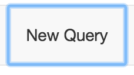
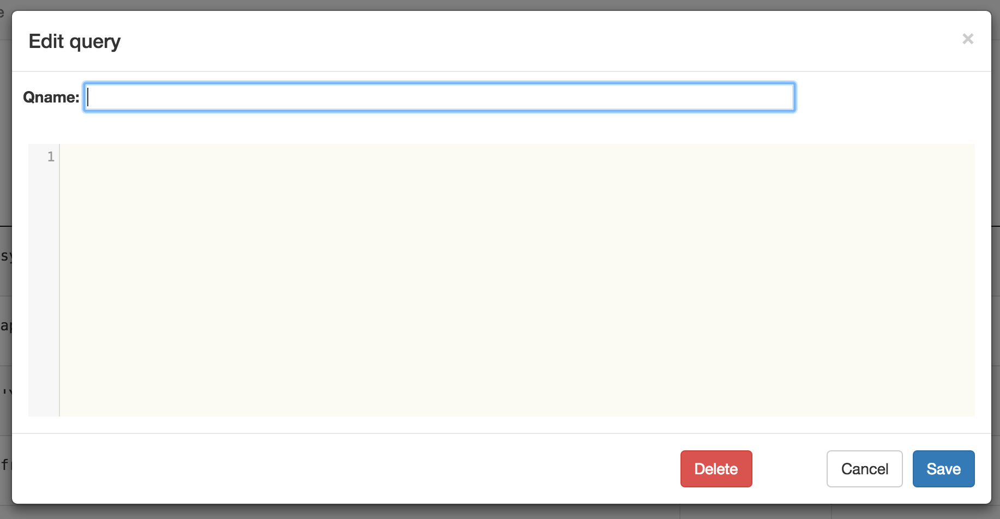
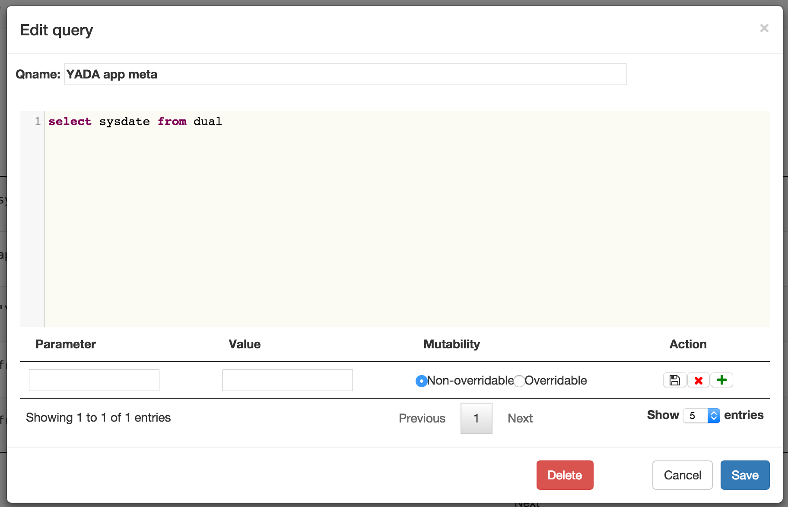
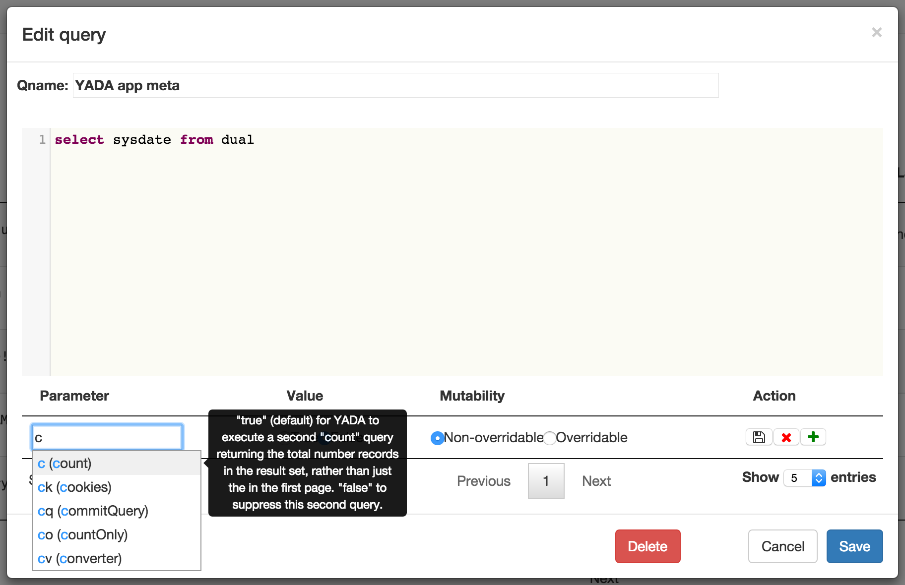
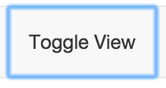
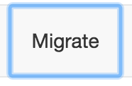
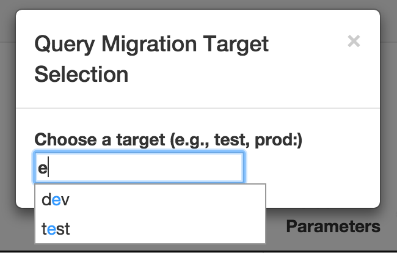
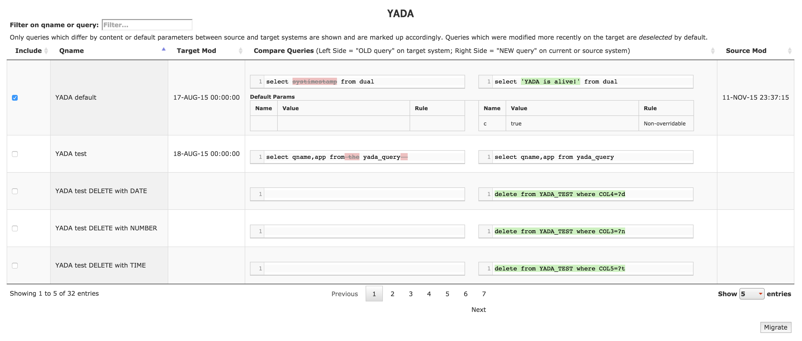
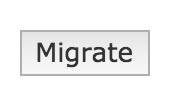

Admin Guide for Query Authors

NOTE: The term YADA app is effectively synonymous with YADA datasource
Installed and Oriented?
See the Quickstart/Deployment Guide if you’ve not yet installed YADA on a server somewhere.
See the User Guide if you’re not sure what you’re going to do with admin tool.
Where is yada-admin?
YADA ships with a webapp called yada-admin. It should be accessible after install at your YADA context/yada-admin url. For example, if you installed the quickstart app version 6.0.0 on your localhost in a default tomcat config (port 8080,) the yada-admin app would be accessible at
http://localhost:8080/YADA-Quickstart-6.0.0/yada-admin
Using yada-admin
yada-admin enables the following activity:
- Create new JDBC, SOAP, REST, or FILE queries for configured YADA apps using the syntax-coloring-enabled editor from CodeMirror
- Modify existing queries
- Delete existing queries
- Assign new default YADA parameters with values for existing queries
- Modify default YADA parameters and values
- Delete default YADA parameters
- Update in-memory cache with new query versions and configuration automatically
- Switch between YADA apps
- Toggle query format from monospace and pre-formatted to proportional and fluid (useful for large queries which consume your whole screen.)
- Filter query list on qname and query content to more easily find the queries for which you’re looking
- Sort the query list
- Migrate queries and associated default YADA parameters from one YADA index to another, e.g., DEV to TEST, or TEST to PROD.
- View diffs of query and default YADA parameter versions between different YADA indices, e.g., DEV and TEST
YADA Markup Refresher
As elucidated in the User GUide, for authoring queries, use the following markup for parameter symbols:
| Markup | Definition | Description |
|---|---|---|
| ?v | VARCHAR, VARCHAR2, CHAR | Any character-based data type |
| ?i | INTEGER, INT | Any integer data type |
| ?n | NUMBER, DECIMAL | Any floating point data type |
| ?d | DATE | Any date data type |
| ?t | TIME | Any time data type |
Queries
Any changes to queries made in the yada-admin tool result in updating of the in-memory ehcache, via the CachedQueryUpdater post-processor plugin (see the Plugin Guide.)
Note that queries which are updated directly in the YADA Index using a command-line or GUI tool other than yada-admin, do not refresh in the cache automatically, which can result in confusion. If you do edit queries directly, it is recommend to run the CacheUpdater plugin via your web browser, or curl command.
http://localhost:8080/YADA-Quickstart-6.0.0/yada.jsp?q=YADA default&pl=CacheUpdater
Creating
To create a query, make sure the app to which the query pertains is active, the click the New Query button:

The Edit Query dialog will pop up:

Enter the query name in the Qname field. It is not required, but it is HIGHLY RECOMMENDED to preface the query name with the app code, e.g., MYAPP insert gumbo or MYAPP select fnords
Then just type your code with appropriate YADA markup in code box, and click Save.
YADA will inform you with a confirmation that the query was saved.
Modifying
To modify a query, click on the row containing the query you wish to edit. The Edit Query dialog will appear again, pre-populated, as well as with the Default Parameter options (see below.)

Remember to click Save after making your changes.
YADA will inform you with a confirmation that your changes were saved.
Deleting
To delete a query, click on the row containing the query you wish to edit. The Edit query dialog will again appear. Click the Delete button, and then confirm your intention to delete.
YADA will inform you with a confirmation that the query was deleted. This is currently an irreversible process. Once you’ve deleted a query, it’s gone.
Default YADA Parameters
Technically, YADA queries will not execute without some “default” parameters such as JSONParams or in its absence, qname. Some YADA parameters have default values, like format, which is automatically set to json unless set explicitly to something else (see the YADA Parameter Specification for details.) Outside of these defaults, no YADA queries have explicit default parameters.
A default YADA parameter is tantamount to hardcoding a parameter and static value in a YADA request; to include it every time that query is requested. Some use cases for default YADA parameters include:
- Security: include the cookie or ck parameter to ensure that every time your REST query executes, your authentication cookie is passed through to the target service.
- Compatibility: Some JDBC-compatible datasources do not support open cursors after commit, causing errors to be thrown unless the default count=true or c=true is explicity changed to false. Storing this as a default YADA parameter takes the headache out of usage.
- Convenience: It saves you the trouble of including a specific parameter everywhere you use the specified query. For example, if you always want an entire result set, rather than a paginated one, use pz=-1 in the URL every time, or better, set it as a default YADA param in the admin tool.
Creating
To add a default YADA parameter to a query, start typing in the Parameter input box. An auto-suggest menu will appear. If you don’t know what a particular parameter means, roll over the menu item to see the popup hint. Click on it to select it.

Note that some YADA parameters expect boolean values, some integers, etc. The Value input control should change based on your selection and validate your input as well.
–
Mutability or Overridablity
Some parameters set by default should not be overridable by re-setting them in a request’s URL string or POST content. Think security, for example. If you want to execute a security preprocessor plugin before your query is executed, it wouldn’t be too helpful to allow a developer to circumvent the default plugin execution. Choosing non-overridable (the default) will prohibit modification of the setting.
–
To save the new default YADA parameter, click the disk icon. To add another, click the plus icon.
Don’t forget to click the Save button for the dialog as well.
Toggle View

Just try it. It changes the format of the Query column from monospaced, syntax-aware, pre-formatted html to proportional font with fluid text. This is basically just to facilitate seeing more rows in the table vs seeing more detail in your code.
Migrating
Migration is a bit more involved.
Migration effectively means copying selected queries from one YADA index to another. There are a few prerequisites:
- The source and target YADA indices should both be at same framework version.
- The target YADA index host must be configured in the source host’s yada-admin/config.json file. This is what enables it to appear in the migration dialog drop-down menu.
- The app selected for migration must be configured in both YADA indices.
- There must be discrepancies in the query code and/or default parameters between the two YADA indices for any queries to appear in the diff tool.
- Cross-Origin Resource Sharing (CORS) can pose a problem with migration, because the transfer is performed by browser-based YADA requests to the target system, whereas the admin-tool is hosted on the source system. The Quickstart/Deployment Guide has some tips for overcoming this.
To begin migration, click the Migrate button in the toolbar.

A modal popup with autosuggest will appear. Start typing the name of the target YADA index, e.g., test.

Select your target of choice. The yada-admin migration diff table will appear:

There are a few things to note:
- Queries in the source YADA index appear on the right side. Queries in the target YADA index appear on the left side. The Mergely javascript diff tool is used for the diff table, and it inverts the highlighting when ordering the columns the other way. This column order, target->source seems off at first, but the inverted highlighting was just wrong. If it makes more sense to do so, think of the table as showing the the target is changing FROM the left hand content TO the right hand content.
- Only queries which differ by content, or parameter settings will appear in the table.
- Only queries which are have a more recent modification time in the source YADA index than in the target YADA index will be selected for migration by default in the first column. All queries in the table are selectable but not all are selected by default.
- Queries that exist only in the source YADA index will appear entirely highlighted, and their counterparts in the target will be empty.
- Only queries selected in the first column will be migrated.
- Queries that have different default YADA parameters will also deplay the parameter differences (see the YADA default query in the image.)
Once you’ve selected the queries you wish to transfer, click the Migrate button in the bottom right below the table.

The UI will refresh. If you selected all the rows of the table, indicated there are no more queries to migrate. If you selected only some of the rows, only those previously unselected should appear.